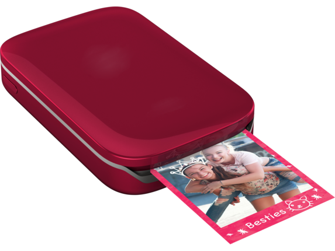

HP Sprocket Z3Z93A Portable Photo Printer
Print high-quality photos on the go with the new HP Sprocket Z3Z93A Portable Photo Printer. This compact printer device can fit into your pocket or backpack; by far, the best compact or mobile printer device ever introduced. Connect your 123.hp.com printer to the smartphone or any other device via Bluetooth and begin printing. The physical dimension of this printer is almost similar to that of a cellphone. The HP Sprocket Z3Z93A has now laid the foundation for the coming of age printers.
Features
- Easily Portable
- Bluetooth Connectivity
- Color Print Technology
- Smartphone Application
- Borderless Photo Prints

123 HP Sprocket Z3Z93A Portable Photo PrinterInstalling Mobile Application
To access the features of the HP Sprocket Z3Z93A printer and print photos using it, you need to install the required application on your smartphone. The whole point of introducing a mobile printer is to print photos from almost anywhere and anytime. HP Sprocket mobile application helps you achieve this.
This software is available on various platforms for you to download. A separate version of the software is available for Android and Apple OS devices. HP does not charge you for the application. Download the application on your mobile phone and follow the on-screen instructions to install it. Wait for the software to complete the installation process.
Unpack the HP Sprocket Z3Z93A and set it up. Load the printer paper and switch on the printer. From your mobile device, establish a connection to the HP Sprocket Z3Z93A Portable Photo Printer. You need to connect your printer and your mobile phone via Bluetooth to print photos. The HP Sprocket application lets you preview and edit the pictures before beginning to print it.
HP Sprocket Z3Z93A Portable Photo Printer
Charging Battery And Powering On
- HP Sprocket Z3Z93A, unlike the other normal printers, has an inbuilt battery and runs on the power provided by the battery. You, the user cannot remove the battery from the printer device.
- Before beginning to use your HP Sprocket Z3Z93A, you need to charge the printer device fully. As soon as you receive the 123.hp.com printer, unpack the box and remove the contents of the box.
- Along with the actual printer device, you will receive a setup manual, a USB cable, and photo paper. You need to use the USB cable provided by the HP to charge the HP Sprocket Z3Z93A printer device.
- Connect one end of the USB cable into the slot provided in the HP Sprocket Z3Z93A printer device. You can connect the other end to an adapter or to a computer.
- This device usually takes 6 to 8 hours to charge completely. A green light will blink indicating that the device has completed charging. Press and hold the power button for three seconds to power on the printer.
Loading Paper
- The contents of your HP Sprocket Z3Z93A printer box include a USB cable, Printer device, Setup Manual, and Photo Paper.
- This is the HP Zink Sticky Backed Photo Paper, specially designed for the HP Sprocket Z3Z93A printer. For better quality pictures, use genuine HP Zink Photo Paper.
- Unpack the photo paper cover. You will find 10 sheets of photo paper with a sticky side and a calibration paper. The calibration paper is unique and helps prevent paper jam.
- Slide the top cover of the printer to load the paper. Load the sticky side down and the calibration card on the top. Ensure that you don’t load more than 10 sheets of paper. Close the top cover and switch on the device.
What Size Paper Do I Need To Buy For My HP Sprocket Z3Z93A Printer?
HP Sprocket Z3Z93A printers support 2 inches X 3 inches, that is, 5 cm X 7.6 cm photo papers with a blue Smartsheet. You will receive a packet of HP Zink photo paper along with the printer. These papers have a sticky side and it is bundled along with a calibration sheet to prevent paper jams.
Caution:
The HP Zink Photo Papers are exclusively made for HP Sprocket printers. These papers are supported only by HP Sprocket Z3Z93A Portable Photo Printer. If you use anything other than HP Zink Photo Printers, you will have print and print quality issues. Make sure that you don’t load more than 10 photos at one instance. This might lead to a paper jam.
Pairing Mobile Device And HP Sprocket Printer
Print photos from your mobile device using the HP Sprocket Z3Z93A printer in a jiffy. Here are few steps to connect or pair your mobile phone to the HP Sprocket Z3Z93A printer.
For Android Mobile Phones
- Before beginning to operate your HP Sprocket Z3Z93A printer, ensure that the device is fully charged. Charge the device until the green light blinks.
- Load a stack of HP Zinck photo paper into the HP Sprocket Z3Z93A printer. Ensure that you load genuine HP paper and do not load more than 10 sheets.
- Turn on the HP Sprocket Z3Z93A printer device by pressing and holding the power button for three seconds. Ensure that the printer’s Bluetooth is turned on.
- Switch on your mobile phone and download the required HP Sprocket printer app on it. Follow the prompted instructions to install the app on your mobile phone.
- Once the installation process completes, turn on the Bluetooth option on your phone. Search for your printer’s Bluetooth device and select it to begin pairing.
For iPhone or iOS Devices
- After receiving the printer, unpack the box and carefully remove the contents of the box. Connect one end of the USB cable to the printer and the other end to the adapter.
- Let the HP Sprocket Z3Z93A device charge for at least 8 hours. Find the HP Zink Sticky Backed Photo Paper along with the printer in the printer box.
- Tear off the package and load the HP Zink Photo Paper into the HP Sprocket Z3Z93A printer. Switch on the printer by pressing the power button.
- Turn on your iPhone or the iOS device and download the HP Sprocket application from the official website. Follow the on-screen instructions to install it.
- Turn on the Bluetooth option and search for the printer’s Bluetooth device from the given list of available Bluetooth devices. Tap on the printer’s name to pair it with your iPhone or iOS device.
Navigating The Sprocket Application
- In order to print a photo from your mobile phone using the HP Sprocket Z3Z93A printer, you need to install the HP Sprocket Printer Application on your mobile phone.
- You can download the HP Sprocket app from the official website. A separate version of the application is available for Android and iOS devices.
- Download the application and follow the prompted commands to install it on your Android or iOS device. In order to establish the connection, you need to pair your printer and mobile phone via Bluetooth.
- Charge your HP Sprocket Z3Z93A printer device fully. Load a stack of HP Zink photo paper and turn on the printer. Printer’s Bluetooth option will be turned on by default.
- Use the HP Sprocket app to print photos. You can customize the setting and various other aspects using the app. It helps you print a photo from your gallery or social media.
Bluetooth Setup
- Printing a photo with the HP Sprocket Z3Z93A is now easier than ever. The first step of printing a photo is establishing a connection between the printer and the device.
- Luckily, you don’t need a wire or cable to connect your HP Sprocket Z3Z93A printer to the Android or iOS device. You can easily connect your printer to the device via Bluetooth.
- You, the user don’t have to install a separate printer driver on your mobile phone. You can simply switch on the Bluetooth option on your cell phone and pair it with the HP Sprocket Z3Z93A printer.
- Press the power button to turn on the Bluetooth option of your printer. There is no dedicated button to turn on the Bluetooth option on your HP Sprocket Z3Z93A printer.
- Simply switch on the Bluetooth option on your mobile phone and search for the printer in the list of available devices. Tap on the option and connect your printer and the device.
Sprocket App Features
Easily Portable – HP Sprocket weighs around 6 ounces and the physical dimensions of this printer are similar to that of a mobile phone. Carry the HP Sprocket Z3Z93A wherever you go and print the photos in an instance. This printer can fit into your pocket, but the quality of this printer parallels many business printers.
Bluetooth Connectivity – Connect your HP Sprocket Z3Z93A and your cell phone via Bluetooth to begin printing a photo or a snap. You don’t need to use a wire or a cable to establish a connection between your mobile phone and HP Sprocket printer. Print high-quality photos with a few taps.
Color Print Technology – This compact printer can print lab-quality photos with vibrant and attractive colors. Print crystal clear photos using the HP Sprocket Z3Z93A. The quality of the pictures printed is not compromised for the size. Print stunning photos from your gallery or from your social media as it is using the HP Sprocket Z3Z93A Portable Photo Printer.
Smartphone Application – You don’t need a PC or establish a connection with your PC and HP Sprocket Z3Z93A to access the features of this printer. Install the required mobile application. You will have separate versions of the application for Android and iOS devices. You can customize settings and preview the picture before actually printing it.
Borderless Photo Prints – Do not worry about the quality of the printed photos if you have an HP Sprocket Z3Z93A printer. This printer enables you to print borderless photos. Set the contrast, brightness and various other visual attributes with the HP Sprocket app. This app helps you enhance the quality of the picture, like a cherry on top.
123 HP Sprocket Red Photo Printer – Troubleshooting
Printer Will Not Print?
- By default, HP Sprocket Z3Z93A is set to turn off after a period of five minutes. You can change the settings from the HP Sprocket mobile application. Turn on the printer if it is switched off.
- Make sure that your printer is fully or sufficiently charged before accessing it. If your printer runs out of battery, it will eventually shut down. Charge the HP Sprocket Z3Z93A for about 6 to 8 hours.
- Ensure that you have loaded the HP Zink Sticky photo paper into the printer. If you use a non-HP or non-authentic photo paper, you might not be able to print or achieve the optimum print quality.
- Ensure that the connection between your 123.hp.com printer and the mobile phone is secure. Turn on the Bluetooth option in your mobile phone and choose the printer driver. Do not connect it to any other available device and expect the printer to print.
- Update the printer firmware or software that you have installed on your Android or iOS device. Reset the mobile device and re-establish the connection. Try printing a sample photo to check if the printer is working.
Improve The Print Quality?
- If you wish to improve the print quality, the first and the foremost thing to do is to use genuine HP Zink Sticky Backed Photo Paper. If you use a non-HP Zink paper, you might not be able to achieve the promised print quality.
- Switch on your printer and check the status of the battery. Open the HP Sprocket mobile app and click on the Menu icon. Tap on the Sprocket option and select your printer from the list. Click on the Status and Battery options. If the battery is less than 50%, charge the device.
- Clean the output rollers. Switch off the device and open the top cover. Remove the photo papers in the device and clean it with a lint-free cloth. Load the papers back into the device and try printing.
- Connect your printer and your mobile phone to the same network. Open the application and tap the Menu icon. Select Sprocket and your 123.hp.com/setup printer. Look for the availability of printer firmware update and if you find any, follow the prompted instructions to install it on your mobile device.
Clear A Paper Jam?
- If your HP Sprocket Z3Z93A has a paper jam, an error message will display on your mobile application. You cannot continue printing the photo without clearing the paper jam.
- If you wish to avoid paper jams in your HP Sprocket Z3Z93A printer, ensure that you always use HP Zink Sticky Backed Photo Paper. If you use anything other than the genuine HP photo paper, you will have print issues. Also, make sure that you don’t load more than 10 sheets at a time.
- Switch off the printer. Open the top cover of the device by sliding it away from the output area. Remove the photo paper from the input tray and carefully pull out the jammed paper. Make sure that you don’t leave any bits and pieces of paper in the printer.
- Reload the HP Zink Sticky Backed Photo Paper into the HP Sprocket Z3Z93A Portable Photo Printer. Align it carefully. Place the blue calibration sheet at the bottom and the rest of the paper with its print side up. Close the top cover and switch on the device. Try printing a sample photo.
TOP RELATED SEARCHES
- 123.hp.com/envy 4520
- 123.hp.com/Officejet 3830
- 123.hp.com/Officejet Pro 6960
- 123 hp Officejet Pro 8720 Scanner Setup
- 123 HP Printer Setup
- 123.hp.com
- Officejet Pro 6978 Papaer Jam
- HP Officejet Pro 6970
- Officejet Pro 8710 WIFI Protected Setup
Feel free to contact our HP Technical Support Team Call Us Toll-Free number 1-844-968-2988, if the issue persists still, refer our website for step by step manual.
123.hp.com/sprocket Z3Z93A